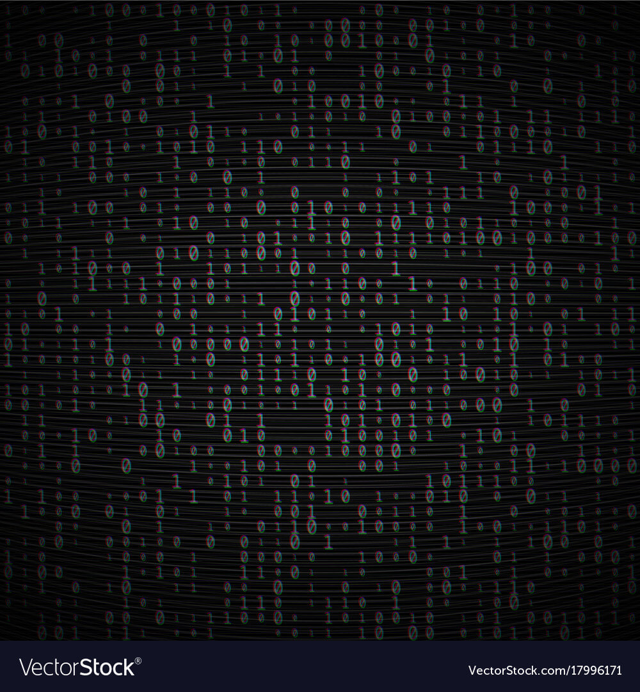
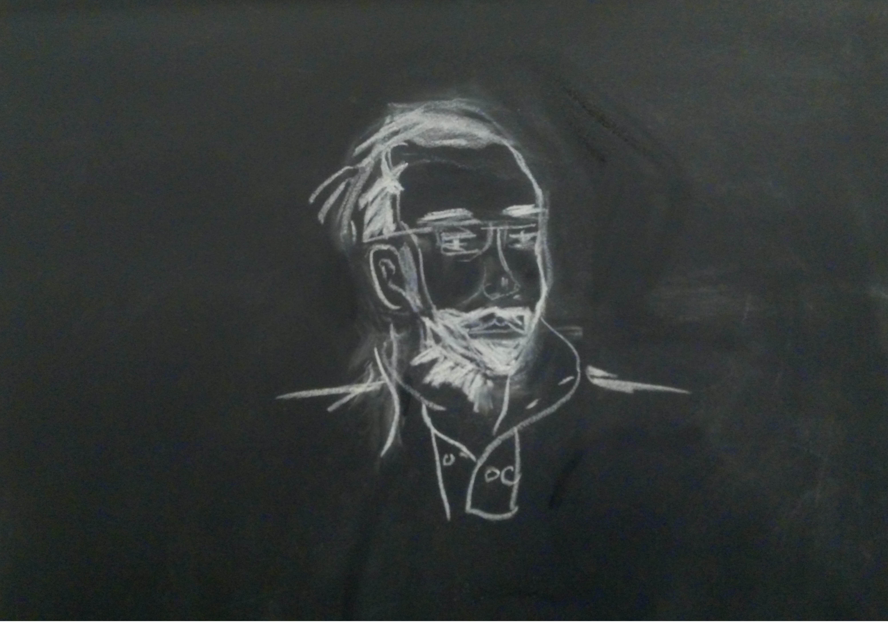
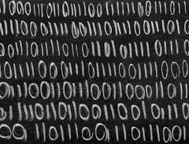

-

 Mehdi Lefeuvre
Mehdi Lefeuvre
32 ans, Permis B
06 66 31 59 48 -
Me contacter : @
- homeAccueil
- starsCompétences
- schoolFormations
- styleProjets
- workExpériences Pro
- thumb_upCentres d'intérêt
"The greatest teacher failure is" - M. Yoda
stars
Compétences

Qui suis-je ?
more_vert
Je suis
close
- Actuellement en formation
- de développeur logiciel.
- Je suis curieux, créatif,
- organisé & autonome

Gestion projets
more_vert
& Planification
close
- Méthode AGILES (SCRUM)
- Anglais fluide
- Conception et maquettage
- Méthodologies MERISE, UML
- Maîtrise outils collaboratifs,
- outils de planification
- & qualité web (OPQUAST)
Langages
more_vert
& Technologies
close
- HTML, CSS, JQuery
- Materialize, Bootstrap
- Material-UI, JavaScript,
- ReactJS, NodeJS, ExpressJS
- Potgresql, Mysql, MongoDB, DynamoDB
- API : Leaflet, google-maps
- PHP, Composer
- AWS, GraphQL

Écologie
more_vert
& Environnement
close
- Écologie du paysage
- Fonctionnement des écosystèmes
- Dynamique des populations
- Bio-statistiques
- Agro-écologie

Géomatique
more_vert
& Cartographie
close
- Webmapping
- Analyse de données
- Traitement d’images
- Calcul d’indicateurs statistiques
- Sémiologie graphique
- Edition cartographique
- PostGis, QGIS, GRASS GIS
- ArcGis, eCognition, ENVI

Informatique
more_vert
& Réseau
close
- Linux, Windows,
- Raspbian, Apache
- Amazon Web Services,
- Geoserver
- Héberger du contenu web
school
Formations
-
developer_modeStage - Développeur Junior
- Durée : 2,5 mois (2018), Lieu : Adopte Ma Tomate
- Période de formation en entreprise
- Application mobile fullstack JS
- Développements « front-end » : ReactJS, Material-UI
- Développements « back-end » : NodeJS, GraphQL, DynamoDB
- Application hébergé chez Amazon Web Services
- Conception d’UI et de composants React
- Développement et implémentation de requêtes avec une BDD NoSQL
- Maquettage, diagramme d'actvité et de séquence (UML)
-
developer_modeEquivalent Licence 2 - Développeur web et logiciel
- Durée : 11 mois (2017 - 2018), Lieu : Simplon Pamiers
- Titre professionnel de niveau III délivré par le Ministère du Travail (RNCP 5927).
- Développement « front-end » et « back-end ».
- Administration systèmes.
- Programmation d’objets connectés.
- Conception d’interfaces.
- Gestion de projet appliquant les méthodologies agiles (SCRUM).
- Méthodes de pédagogie active, pair programming.
-
location_cityStage - Chargé d'études environnement
- Durée : 8 mois (2012), Lieu : Agence d’Urbanisme de Toulouse
- Gestion de bases de données.
- Traitement de données géospatiales.
- Calculs d'indices paysagers.
- Classifications supervisées.
- Analyse des potentialités écologiques du SCoT de la Grande Agglomération Toulousaine.
-
mapMaster 2 - Aménagement du Territoire et Télédétection
- Durée : 1 an (2011 - 2012), Lieu : Université Toulouse III
- Conception et gestion de bases de données.
- Traitement et interprétation de données bio-statistiques.
- Traitement d’images et Application des Technologies Spatiales.
- Écologie appliquée aux agrosystèmes, écologie des milieux terrestre et aquatique, écologie du paysage.
- Systématique des plantes, physiologie végétale, inventaires naturalistes.
-
languageStage - Chargé d'études R&D agricole et forestier
- Durée : 10 mois (2010 - 2011), Lieu : Centre d’Etudes Spatial de la Biosphère (CESBIO)
- Collecte et traitement de données spatiales.
- Beta-test d'une plateforme de gestion d'exploitation agricole.
- Validation de modèles biophysiques appliqués à l’irrigation.
- Digitalisation de plans et édition de cartes.
- Télédétection appliquée au suivi de parcelles forestières.
-
publicMaster 1 - Sciences, mention écologie
- Durée : 1 an (2009 - 2010), Lieu : Université Toulouse III
- Initiation à la programmation et aux outils mathématiques appliqués aux biostatistiques
- Analyse, traitement et interprétation de données en écologie
- Systèmes d'Information Géographiques (SIG)
- Génétique et Dynamique des populations
- Droit de l'environnement
-
local_floristLicence 3 - Biologie des Organismes, Populations et Écosystèmes
- Durée : 3 ans (2006 - 2009), Lieu : Université Toulouse III
- Traitement des données biologiques et méthodologie expérimentale
- Ecologie appliquée à la conduite des agrosystèmes
- Classification animale, systématique des plantes et physiologie végétale
- Biologie cellulaire, moléculaire, microbiologie
- Biochimie des substances naturelles
- Paléontologie-Géologie
style
Projets
work
Expériences
professionnelles
-
languageSupport technique client sur solution cartographique web (GeoStore / One Atlas)
- Durée : 18 mois (2016 - 2017), Lieu : Airbus DS
- Facilitateur entre les différents services (service client, programmation satellite, développement logiciel, techniciens, ventes, marketing).
- Qualification opérationnelle des portails web, reporting de bugs, spécification des demandes de développement.
- Rédaction des news, des guides utilisateurs et des FAQ, veille concurrentielle.
- Formation des utilisateurs et promotion auprès des clients des produits GeoStore et One Atlas (Rome, Lyon, Toulouse).
keyboardIngénieur en développement logiciel, thématiques agricoles et forestières- Durée : 8 mois (2015 - 2016), Lieu : Airbus DS
- Développement de solutions logicielles cartographiques.
- Développement d’algorithmes de détection d’objets fins en forêt tropicale (routes, déforestation).
- Traitement d’image satellites, calculs d’indices biophysiques.
- Alpha testing de logiciels et rédaction de documentation utilisateur.
terrainExpert SIG en gestion des risques naturels sur projet européen (IncREO)- Durée : 14 mois (2013 - 2015), Lieu : Airbus DS
- Création et Gestion de bases de données.
- Développement d’un outil d’analyse d'itinéraire et d'un simulateur de séismes.
- Formation des utilisateurs aux outils (Pays-Bas,Italie, Allemagne).
- Mise en place et gestion d’un Web Atlas avec Geoserver.
- Rédaction d’articles scientifiques et de documentation technique en anglais.
natureTechnicien de production en cartographie forestière- Durée : 7 mois (2012 - 2013), Lieu : Airbus DS
- Calcul d'indices biophysiques et statistiques.
- Classification et mosaïquage d'images satellites.
- Cartographie de la Forêt Tropicale Humide du bassin du Congo.
- Analyse historique de la déforestation et de la dégradation forestière.
thumb_up Centres d'intérêtNature more_vertActivités close- Sorties nature : ornithologie, mycologie, botanique
- Jardinage potager
- Randonnées : Pic d'Estats, MontCalm
- Cyclotourisme : canal du midi, Drôme à vélo
 Bande dessinée more_vertAuteurs & Œuvres close
Bande dessinée more_vertAuteurs & Œuvres close- Denis Bajram : Universal WAR I & II
- Jens Harder : Alpha Directions
- Moebius : Arzach, Edena
- Joann sfar : Donjon
- Manu Larcenet : Le retour à la terre, Le combat ordianire, Blast
 Cinéma more_vertGenres & Films close
Cinéma more_vertGenres & Films close- Science fiction : Interstellar, Matrix, Blade Runner, Mad Max
- Fantasy: Le seigneur des anneaux, Game Of Thrones
- Super Héros : Iron Man
- Gangster : Pulp Fiction, Usual Suspects
- Animation : Miyazaki, Nausicaa
Musique more_vertGenres & Artistes close- Hip Hop : Jurassic Five, Sound Providers
- Electro : Fakear, Sayag Jazz Machine, Stromae
- Jazz : Miles Davis, Fela Kuti
- Percussions : Mamady Keïta
Romans more_vertAuteurs & Œuvres close- Isaac Asimov : Les robots, Fondation
- J.R.R Tolkien : The hobbit, The Lord of the rings
- Alain Damasio : La horde du conrevent
- H.P. Lovecraft : Le mythe de Cthulhu
Sciences more_vert& technologie close- Astronomie
- Physique quantique
- Technologies du spatial
- Raspberry
- Technologies web